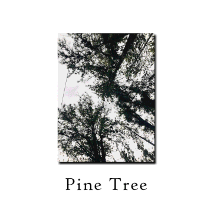

There are many different species of trees.
- Cedar trees were used by indigenous peoples in Canada (such as the Haida) to build canoes. Elsewhere, one of the most famous types of cedar is the Lebanese cedar.
- Hemlock trees are a kind of conifer known as Tsuga in Japan. It is unrelated to the poisonous plant also known as hemlock (which was used for executions in ancient times).
- Fir trees are large, and can grow to heights of 80 metres tall.
- Pine trees grow in the northern hemisphere.
- One spruce tree in Norway known as "Old Tjikko" is possibly the world's oldest living tree, being 9,550 years old.
Source: Wikipedia